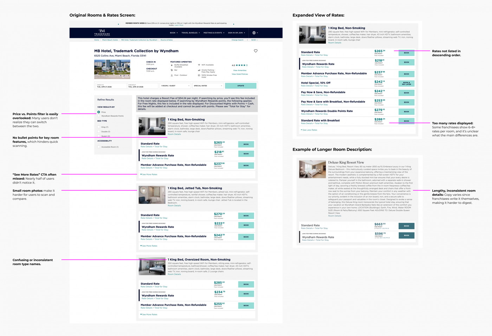
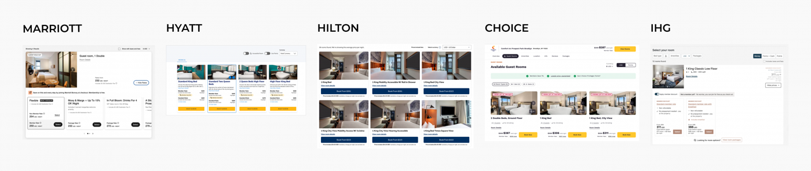
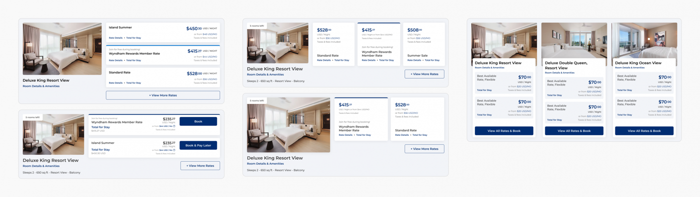
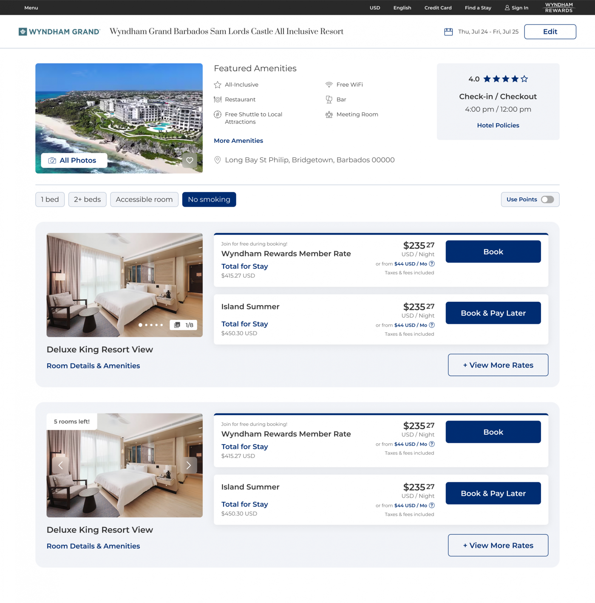
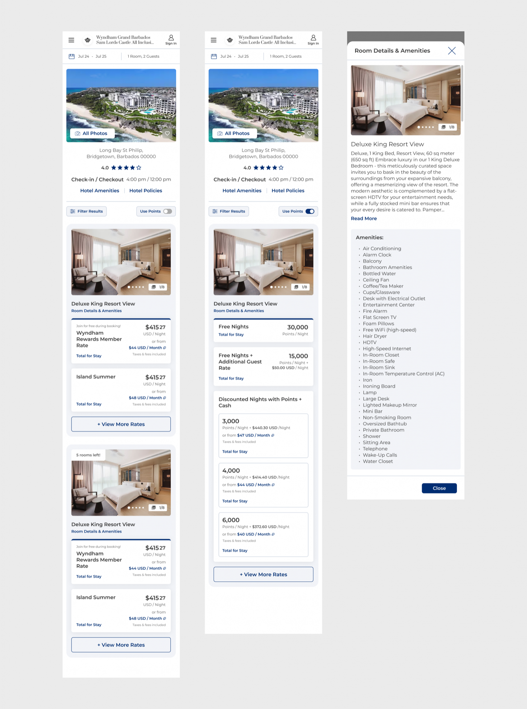

Rooms & Rates

Rooms & Rates is the highest-stakes screen in Wyndham's booking flow — the moment travelers compare room types and pricing before they commit. As part of a company-wide replatforming effort, I led the redesign of this experience across Wyndham's franchise ecosystem, balancing usability gains against a flow that had punished past redesigns with drops in conversion.
Users struggled to compare rooms because of inconsistent pricing structures, dense content, and unclear hierarchy. Because Wyndham operates as a franchise system, room details and pricing vary widely from property to property — franchisees own their own content. Previous redesigns had improved usability on paper but hurt conversion, so the organization had grown cautious about touching this flow at all.
Objectives:

I benchmarked how major hotel and travel platforms handle room and rate selection. Two dominant patterns emerged: single-page comparison models (Marriott, Hilton, Hyatt, IHG) and separated room/rate flows that trade extra navigation for deeper pricing detail (Choice, and OTAs like Expedia and Booking.com). Given the booking flow's sensitivity to conversion, I focused the near-term solution on improving clarity within the existing single-step model, while exploring modal-based rate expansion as a longer-term direction.

Design directions:

After stakeholder alignment, we moved forward with an incremental approach — refining the existing list-based layout while deferring more experimental patterns for post-launch validation, given the conversion sensitivity of the flow. We then ran usability testing (UserTesting) comparing the updated design against the live production experience across desktop and mobile prototypes.
Users responded well to the visual clarity, stronger imagery, and easier navigation. But key gaps remained: comparison still suffered from inconsistent room naming and the need to open individual detail views; vague rate titles made it hard to understand what was included; and a meaningful share of users didn't notice the Price/Points toggle at all.


The safest move wasn't the most ambitious redesign — it was staging change deliberately in a flow where past ambition had already cost conversion.
Given the scale and complexity of a franchise-driven ecosystem, we shipped the most validated, stable version of the experience at launch and staged the rest:
Post-launch metrics are still coming in. Success is defined against maintaining baseline booking performance while improving conversion, decision confidence, and rate-selection efficiency.